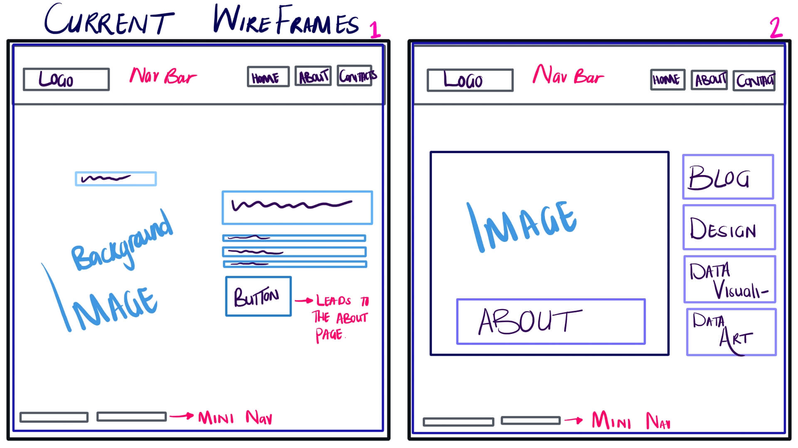
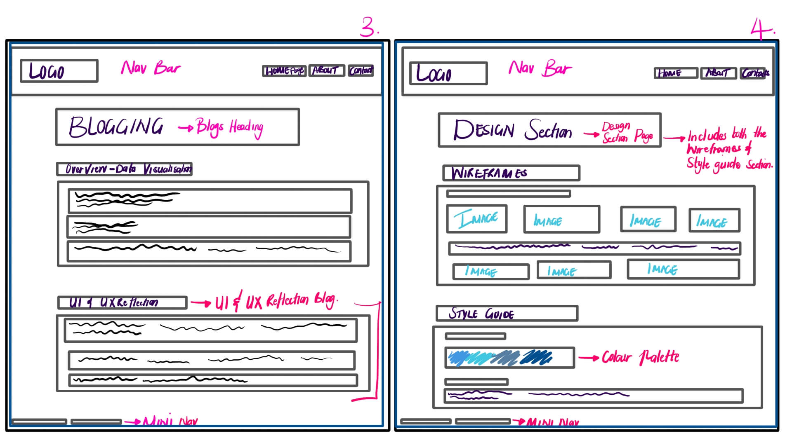
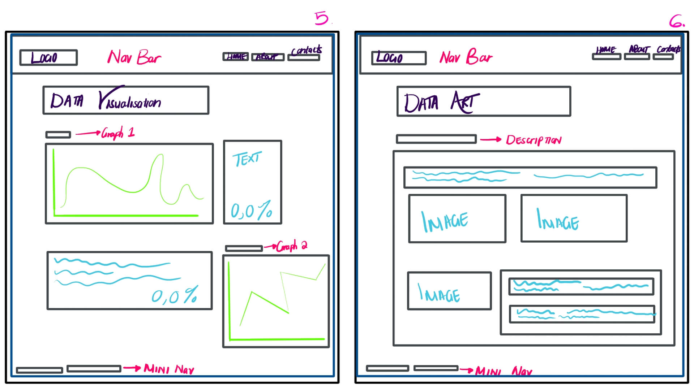
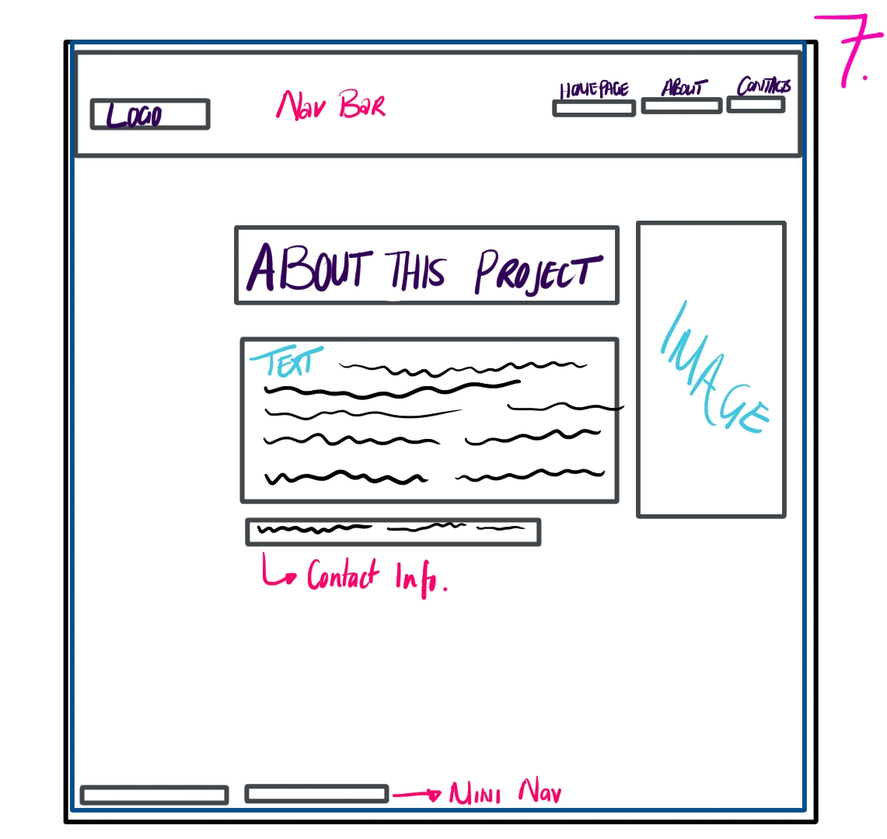

Below are images of the Original WireFrames.
This design included each section/page all onto a continuous single page -
thereofore the user would scroll downwards through the site. This design would call for each section/page to be included in the nav bar menue.
In that way, to simplify the UI and UX navigation throughout the site, the user would select the menue button to whichever section they wanted to skip to or go back to.
.jpg)
.jpg)
GOAL ALIGNMENT - the goal for this website, as to essure that I well fit the theme of 'Space' with the elements of blogs, wireframes and styel guide sections neccessary for this site. \I did originally think of taking a different route this time, and try an interface desgin that went straight through and continued all on one page. Therefore users would only need to scroll up and down throughout the entire website. This may still be an idea I would to explore and challenge myself with. But overall, essentially the goal is create a simple, easy to understand interface that still uses and upholds conventional web design UI interface. To stick to the theme, and make all elements work well together. For instance, establishing a colour palette, font/s and UI designs that blend well together - the goal is to keep my site user-friendly and easy to use, while still successfully getting the theme, purpose and meaning across.
INFORMATION STRUCTURE - below is an image of how I see the user navigatign through the site and how I structured it so that from the Homepage,
the user is 'directed' or navigated to explore the Aboutpage (as an obvious sign). This content map explores what each page entials, communicating the brainstorming stages during the desgin stage.
.jpg)
SELECTED INTERFACE ELEMENTS - concerning the selected interface elements, I opted for an easy simple UI interfce flow. This can be noted firstly on the HomePage. The user is greeted with a thematic background, which could already give context to what the sites theme is. Then they are presented with 'focused' navigational options on how to move forwards on the site, e.g., Either explore via the Nav bar, or select the 'Let's go!' tab. I used this interface element not to limit the user, but provide them with a straight-to-the-point, simple interface around this space.
REFERENCES - A link to the referenced resources. LogRocket
Below are images of the Current WireFrames. As described in UI and UX Reflection.    

.jpg)
.jpg)
.jpg)
.jpg)